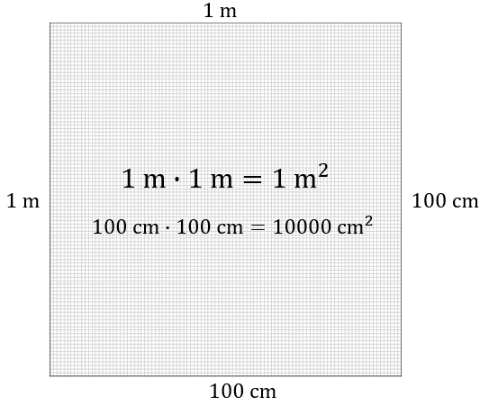

Podstawową jednostką pola powierzchni jest \(1\) metr kwadratowy (\(1
\text{m}^2\)), który odpowiada polu kwadratu o boku \(1\) metra.
Wśród mniej typowych jednostek pól powierzchni możemy wyróżnić ary (a) oraz hektary
(ha): \[1\ \text{a}=100\ \text{m}^2\] \[1\ \text{ha}=100\ \text{a}=10000\ \text{m}^2\]
Ponadto często stosowane są kilometry kwadratowe (km\(^2\)), decymetry kwadratowe
(dm\(^2\)) oraz centymetry kwadratowe (cm\(^2\)).
Przeliczenia najważniejszych jednostek powierzchni
\(1\ \text{km}^2=1000000\
\text{m}^2=100\ \text{ha}=10000\ \text{a}\)
\(1\ \text{m}^2=100\ \text{dm}^2=10000\
\text{cm}^2=1000000\ \text{mm}^2\)
\(1\ \text{dm}^2=100\ \text{cm}^2=10000\
\text{mm}^2\)
\(1\ \text{cm}^2=100\ \text{mm}^2\)
\(1\ \text{ha}=100\ \text{a}=10000\
\text{m}^2\)
\(1\ \text{a}=100\ \text{m}^2\)
Powyższe przeliczenia można łatwo wyprowadzić znając
przeliczenia jednostek długości.
Wiedząc np. że \(1\)
metr = \(100\) centymetrów można obliczyć, że: \[1\ \text{m}^2= 100\ \text{cm}\cdot 100\ \text{cm} =
10000\ \text{cm}^2\] Co ilustruje poniższy rysunek. 
Ile centymetrów kwadratowych jest w \(3\) kilometrach kwadratowych?
Wiemy, że \[1\ \text{km}=10^3\ \text{m}=10^5\ \text{cm}\] Zatem \(1\ \text{km}^2\),
to kwadrat o bokach długości \(10^5 \ \text{cm}\), czyli: \[3\ \text{km}^2=3\cdot 10^5\cdot 10^5
\ \text{cm}^2=3\cdot 10^{10}\ \text{cm}^2\]